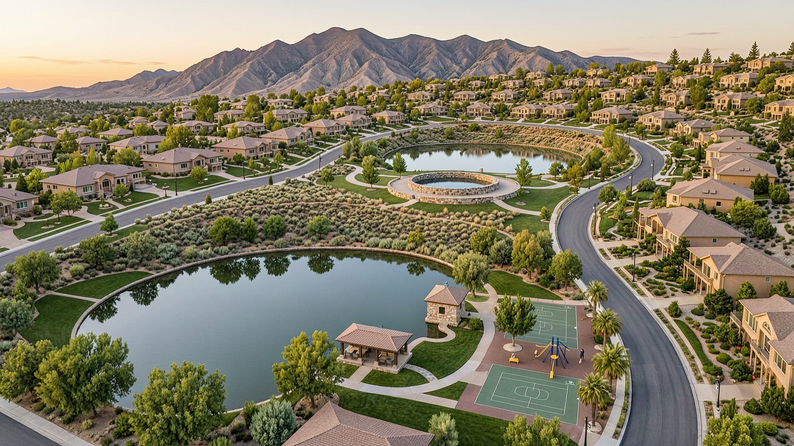

<meta charset="utf-8">
<meta name="viewport" content="width=device-width,initial-scale=1">
<title>Never Trust Polished Boots — thermal load facility siting</title>
<style>
:root{--ink:#1a1a1a;--bg:#f7f6f1;--blue:#183eb0;--water:#cbe3f2;--rule:#ddd9cc;--dim:#6a6862}
*{box-sizing:border-box}
body{margin:0;background:var(--bg);color:var(--ink);
     font:16px/1.7 -apple-system,BlinkMacSystemFont,"Helvetica Neue",sans-serif}
header{max-width:1180px;margin:0 auto;padding:56px 32px 0}
main{max-width:1180px;margin:0 auto;padding:0 32px 90px}
.kicker{font-size:11px;letter-spacing:.3em;text-transform:uppercase;color:var(--dim);margin:0 0 14px}
.kicker a{color:var(--dim)}
h1{font-size:clamp(34px,6vw,60px);line-height:1.03;letter-spacing:-.03em;margin:0 0 18px;font-weight:700}
.lede{font-size:clamp(18px,2.2vw,22px);line-height:1.5;max-width:38ch;color:#3a3833;margin:0 0 34px}
h2{font-size:11px;letter-spacing:.22em;text-transform:uppercase;color:var(--dim);
   margin:52px 0 10px;font-weight:600}
p{max-width:62ch;margin:0 0 13px}
strong{font-weight:650}
.note{border-left:3px solid var(--water);padding:2px 0 2px 18px;color:#4a4842;margin:16px 0 0;
      max-width:62ch}
.warn{border-left-color:var(--blue)}
.meta{display:grid;grid-template-columns:repeat(auto-fit,minmax(150px,1fr));gap:1px;
      background:var(--rule);border:1px solid var(--rule);margin:26px 0 0;max-width:900px}
.meta div{background:var(--bg);padding:13px 16px}
.meta b{display:block;font-size:23px;letter-spacing:-.02em;line-height:1.1}
.meta span{font-size:11px;letter-spacing:.14em;text-transform:uppercase;color:var(--dim)}
/* ── the instrument itself. enrolled bills are printed in a fixed measure with hanging
      subsections; the indentation IS the structure, so it is preserved rather than restyled. */
.bill{border-top:3px solid var(--ink);border-bottom:3px solid var(--ink);margin:30px 0 0;
      padding:26px 0 30px;background:#fffdf8}
.affects{margin:16px 0 0;max-width:62ch}
.affects .lbl{font-size:10px;letter-spacing:.22em;text-transform:uppercase;color:var(--dim);
     margin:14px 0 4px;font-weight:650}
.affects ul{margin:0;padding-left:18px;font-size:14.5px;line-height:1.85;color:#33312c}
.affects b{font-family:ui-monospace,"SF Mono",Menlo,monospace;font-size:14px}
.sec{margin:0 0 34px;padding:0 26px}
.sec:last-child{margin-bottom:0}
.sec h3{font-size:12px;letter-spacing:.16em;text-transform:uppercase;color:var(--blue);
        margin:0 0 4px;font-weight:650}
.sec .catch{font-size:19px;font-weight:700;letter-spacing:-.01em;margin:0 0 12px;max-width:52ch}
.sec pre{font:13.5px/1.72 ui-monospace,"SF Mono",Menlo,monospace;white-space:pre-wrap;
         margin:0;max-width:78ch;color:#26241f;overflow-x:auto}
.amend{display:inline-block;font-size:10px;letter-spacing:.16em;text-transform:uppercase;
       background:var(--blue);color:#fff;padding:3px 8px;border-radius:2px;margin-left:8px;
       vertical-align:2px}
footer{border-top:1px solid var(--rule);max-width:1180px;margin:0 auto;padding:22px 32px 70px;
       color:var(--dim);font-size:13px}
a{color:var(--blue)}
figure.fig{margin:0 0 8px;padding:0}
figure.fig img{width:100%;height:auto;display:block;border:1px solid var(--rule)}
figure.fig figcaption{font-size:13.5px;line-height:1.6;color:#4a4842;margin-top:10px;max-width:66ch}
@media (max-width:640px){.sec{padding:0 14px}}
</style><style>.bill pre{margin:0;padding:0 26px;white-space:pre-wrap;word-wrap:break-word;font:14px/1.75 ui-monospace,"SF Mono",Menlo,monospace;color:#33312c}@media(max-width:620px){.bill pre{font-size:12.5px;padding:0 14px}}</style>
<header>
<p class="kicker"><a href="index.html">← Earth and Water</a> · the siting bill</p>
<h1>Never Trust Polished Boots</h1>
<p class="also" style="font-size:clamp(17px,2vw,21px);line-height:1.5;max-width:60ch;color:inherit;font-style:normal">⭐⭐ <strong>It is a zoning ordinance.</strong> A community saying what may be built here and on what conditions — <em>which is the oldest and least contested power a state has, and the reason nobody calls a parking minimum radical.</em></p>
<p class="lede">Nothing is prohibited. Build here three different ways and pay nothing at all — the only thing that costs money is boiling the basin, and if you choose it you will buy the lake ten acre-feet for every one you take.</p>
<div class="meta"><div><b>0</b><span>prohibitions</span></div><div><b>3</b><span>ways to pay nothing</span></div><div><b>10&times;</b><span>replaced per af evaporated</span></div><div><b>150%</b><span>of peak load, renewable</span></div><div><b>36 h</b><span>of storage</span></div><div><b>1926</b><span>the year this power was settled</span></div></div>
</header>
<main>
<figure class="fig">
  
  <figcaption>A facility that meets these four provisions. The upper lake, the fall, the river and the lower lake are the cooling system. The road is the generation. The door, left of centre, is the building — all of it. <strong>Nothing here is required by the bill:</strong> the bill requires a closed loop, and after that the heat has to go somewhere.</figcaption>
</figure>

<h2>What this is</h2>
<p>A working draft of a Utah bill setting <strong>siting conditions</strong> for large thermal load facilities — data centres, principally. Not a water rule and not an environmental measure. <em>A condition of approval</em>, of the kind every town in America keeps a page of.</p>
<p class="note star">⭐ <strong>The frame is a parking minimum, and it is deliberate.</strong> Arizona has required a hundred-year assured water supply before a subdivision can be built since 1980. California has required solar on new homes since 2020. <em>This asks a data centre for both.</em> There is nothing novel in it, which is the entire point.</p>
<p class="note">⭐ And it is the firmest ground in this whole package. Everything else here touches contested doctrine; <strong>land use has been settled since <em>Euclid v. Ambler</em> in 1926.</strong> A century of litigation has only made it firmer, and nobody attacks it because it is boring.</p>
<p class="note warn">⚠ <strong>This was not drafted by a lawyer and it is not legal advice.</strong> It was drafted by a layman with machine assistance, against six enrolled Utah bills that passed and the live Utah Code. <em>It is published in order to be corrected.</em></p>

<h2>Why the name</h2>
<p><strong>Never trust a man in polished boots.</strong> He has not been anywhere the work is. He arrives clean, he leaves clean, and something about the place is different after.</p>
<p>The industry did not come to the desert by accident and not in spite of the water — <strong>it came for the dryness.</strong> Evaporative cooling runs on <em>wet-bulb depression</em>, the gap between air temperature and wet-bulb. Arid air has a wide gap, so a tower in the Great Basin sheds enormous heat with almost no compressor running. Humid air closes the gap and the same tower stalls.</p>
<p class="note star">⭐ <strong>Which means the driest places in America are the most efficient places to evaporate water, and the industry sited itself accordingly.</strong> <em>The scarcity is the amenity.</em> Nobody did anything wrong. They read a price that carried no information and believed it.</p>

<h2>Three doors, and none of them are locked</h2>
<p>The earlier draft of this bill prohibited consumptive heat rejection outright. <strong>That draft is gone.</strong> A prohibition invites the only argument that kills bills in this state — <em>Utah just told the biggest capital wave in a generation to go build in Nevada.</em> A price invites a design review instead, and the industry is full of engineers who would rather solve a problem than pay for it.</p>
<div class="tw"><table>
<thead><tr><th>the door</th><th>what it costs</th></tr></thead>
<tbody>
<tr><td><strong>reject your heat to rock</strong> — closed loop, boreholes, no evaporation</td><td class="pos">nothing</td></tr>
<tr><td><strong>bring your own water</strong> — conveyed into the basin from outside it</td><td class="pos">nothing</td></tr>
<tr><td><strong>recover and return</strong> — condense the vapour, put it back</td><td class="pos">nothing</td></tr>
<tr><td>evaporate basin water</td><td>the reference rate, per acre-foot</td></tr>
<tr><td>evaporate treated drinking water</td><td>the potable rate, per acre-foot</td></tr>
</tbody></table></div>
<p class="note star">⭐⭐ <strong>Not closed. Gated.</strong> This is not a state turning away capital. It is a state specifying the neighbourhood, which is what a good one does.</p>

<h2>What the charge actually buys</h2>
<p>A charge cannot be poured into a lake. <strong>What it can do is buy somebody else&rsquo;s water</strong> — and the companion bill converts dollars into acre-feet at a rate that makes the whole thing work.</p>
<div class="tw"><table>
<thead><tr><th></th><th>per acre-foot</th></tr></thead>
<tbody>
<tr><td>what an evaporator pays</td><td><strong>$1,821</strong></td></tr>
<tr><td>what it pays on treated drinking water</td><td><strong>$2,586</strong></td></tr>
<tr><td>what <a href="dusty.html">Spurs</a> frees agricultural water for</td><td><strong>$85 &ndash; $176</strong></td></tr>
</tbody></table></div>
<p class="note star">⭐⭐⭐ <strong>Every acre-foot evaporated funds ten to twenty-one acre-feet of freed farm water. On drinking water, fifteen to thirty.</strong> <em>It is not a fee. It is a replacement obligation with a leverage ratio.</em></p>
<p><strong>A 20 MW hall on evaporative cooling destroys about 256 acre-feet a year</strong> at an industry-typical 1.8 litres per kilowatt-hour. It pays roughly $466,000 — which funds <strong>2,600 to 5,500 acre-feet</strong> of agricultural conversion. <em>Net to the lake: two to five thousand acre-feet a year, from one building.</em></p>
<p class="note warn">⚠ <strong>And it does not save the lake by itself.</strong> The deficit is 800,000 acre-feet a year; it would take more than a hundred and fifty such halls to close it and nobody is building a hundred and fifty. <em>What this guarantees is narrower and worth saying plainly: data centres will not be the thing that kills it.</em> It is also the only line in the package that <strong>scales with the thing everyone is afraid of</strong> — the more compute arrives, the more farm conversion gets paid for.</p>

<h2>And if you plug into the tap, you pay twice</h2>
<p>The water bill is for the water. <strong>The charge is for destroying it.</strong> A facility drawing treated municipal supply and evaporating it pays both, and lands at roughly <em>double what a household pays for the identical acre-foot on a lawn.</em></p>
<p class="note star">⭐ <strong>The premium tracks the insult.</strong> The household is drinking and washing. The hall is taking water somebody paid to make safe to drink and putting it into the sky. <em>And it is avoidable three ways, all of them cheaper than paying it.</em></p>

<h2>The safe harbour — we hold you to your own plan</h2>
<p>Established operators in this basin already meter, already publish reduction targets, and already report against them. <strong>The bill invents nothing for them. It makes their own commitment binding.</strong></p>
<p class="note star">⭐⭐ <strong>A facility that meters, publishes a reduction schedule, and meets it, complies.</strong> That costs an operator nothing they have not already announced — <em>and it converts the people who did the work first into the benchmark the newcomer has to reach.</em> Anyone can join by doing the same thing.</p>
<p>It is also the honest version. They are not spared because they are old. <strong>They are spared because they measured and improved</strong>, and the door stays open behind them.</p>

<h2>Below grade, and the town says what goes on top</h2>
<p>The racks and the heat rejection go under the ground. <strong>The surface stays available for non-industrial use, and the land use authority decides which one</strong> — park, pitch, orchard, gardens, housing, a golf course if that is what the town wants. The bill never names it.</p>
<p class="note star">⭐ <strong>A conventional campus is acres of concrete pad and dry coolers throwing heat into the air above a valley that already inverts every winter.</strong> Grass, water and canopy at grade is a measurably cooler site. <em>That is building science, not landscaping</em> — and regulating exactly this is what zoning has been for since 1926.</p>
<figure class="fig">
  
  <figcaption><strong>And this is the version nobody protests.</strong> Two ponds, a stone pump house, a pavilion and a playground, on a bench in the foothills — <em>storage that reads as the reason people paid extra to live on this street.</em> ⚠ Honest note: the two ponds here sit too close in elevation to store much. The drop is the machine, and this frame is short of it. <strong>What it does show is what the neighbours actually see.</strong><br><br><em>Rendering, not a photograph. Made with the help of AI, in the cloud at a data centre — hopefully not burning coal.</em></figcaption>
</figure>

<p><strong>It is drafted as a condition of new siting, accepted by choice.</strong> Nobody&rsquo;s property is taken; a builder who wants this ground takes the deal, and an engineering waiver covers sites where groundwater or bedrock make burial genuinely infeasible.</p>
<p class="note">⭐ And it is the provision that gives the bill a constituency. <em>A bill that only takes has nobody in the room arguing for it.</em> This one hands a town a park on top of a tax base.</p>

<h2>Metering, and the line that makes it self-enforcing</h2>
<p>Every instrument here is arithmetic on three numbers, and a facility that declines to install a meter has erased two of them. So the requirement is stated — and <strong>the consequence of skipping it is not a fine, it is an assumption.</strong></p>
<p class="note star">⭐⭐ <strong>Water that is not measured is presumed to have been consumed in its entirety, and the facility carries the burden of showing less.</strong> <em>There is no penalty to litigate and no inspector to argue with.</em> Metering stops being a burden the state imposes and becomes the cheapest thing a facility can do for itself. Nobody has ever had to enforce a rule that pays for itself the day it is followed.</p>
<p class="note">⭐ <strong>Polished Boots installs the meter. <a href="dust.html">Dust</a> reads it.</strong> The two instruments connect through measurement rather than money, which is the only connection that survives <em>West Lynn Creamery.</em></p>

<h2>What is unchanged from the first draft</h2>
<p><strong>Bring your own power.</strong> 150% of peak load in renewable generation, owned or under contract for the life of the facility, and 36 hours of storage. Technology-neutral, with a safe-harbour list so that no analyst prices thirty-six hours in lithium and calls the bill a ban.</p>
<p><strong>Sign a grid agreement.</strong> Dispatch of that generation and storage in support of the serving utility, for compensation, negotiated between the parties — and it does not make the facility a public utility.</p>
<p class="note">⭐ <strong>The surplus is not incidental.</strong> A facility carrying half again its own load is the interruptible customer a grid has never had, and it is the same overbuild that lets a site pump water uphill at three in the morning with power nobody else wants.</p>

<h2>The hard parts, named</h2>
<p class="note warn">⚠ <strong>The chapter is taken.</strong> Verified against le.utah.gov, 12 August 2026: Title 54 Chapter 25 is occupied, and so are 26 and 27. <strong>RESOLVED 13 August 2026:</strong> rather than take a new chapter, the bill became <strong>Part 10 of Chapter 54-26</strong> — the large-load statute the Legislature already wrote. Part 10 was verified vacant; final numbering is assigned by legislative counsel at introduction.</p>
<p class="note warn">⚠ <strong>Chapter 26 is Utah&rsquo;s existing large-load statute</strong> &mdash; &ldquo;Large-Scale Electric Service Requirements,&rdquo; with active rulemaking before the Public Service Commission (Docket 25-R318-01). <strong>So the bill went inside it rather than beside it.</strong> The grid section is now two subsections instead of four, because <em>the agreement it used to create already exists in this chapter</em> &mdash; a facility simply provides its dispatch through the agreement a large load customer already signs. <strong>The legislature has already decided that loads of this size need their own framework; this is the water-and-siting axle bolted onto a vehicle the state already built.</strong> The open question is timing, not placement: whether a new part arriving mid-rulemaking disrupts the Commission&rsquo;s work.</p>
<p class="note warn">⚠ <strong>Federal facilities.</strong> There is a federal data centre in this basin and a state siting statute does not reach it. <em>Carve it out explicitly rather than let preemption become the whole conversation.</em></p>
<p class="note warn">⚠ <strong>The threshold sweeps wide.</strong> Five megawatts of installed heat rejection catches cold storage, food distribution and some manufacturing. Hospitals and schools are already exempt; the grocery warehouse is not. <em>Raise the floor, or scope it to facilities whose primary business is computing.</em></p>
<p class="note warn">⚠ <strong>And the rate may not deter.</strong> At these numbers a facility may simply pay, and the honest answer is that this is acceptable — <em>because a payer funds ten times the water it destroys.</em> Deterrence is the hope. The replacement ratio is the promise.</p>

<h2>The instrument <span class="amend">rough draft · for red pen</span></h2>
<p class="note warn">⚠ <strong>This is a first cut and it is meant to be marked up.</strong> The frame above is settled; the text below is not. <em>The known weaknesses are listed after it, on purpose</em> — a reader should spend their time on the problems that are not already on that list.</p>
<div class="tw"><table>
<caption>The whole bill in English. Read this instead, if you like — the statute below says the same thing in the language a committee needs.</caption>
<thead><tr><th>§</th><th>what it actually says</th><th>priced or required?</th></tr></thead>
<tbody>
<tr><td><strong>201</strong></td><td><strong>Cool your building however you want.</strong> If you evaporate water out of this basin you pay what a business pays for it. If you evaporate treated drinking water you pay what a household pays — the higher number. Bring water in from outside, or catch your steam and put it back, and you pay nothing.</td><td class="pos"><strong>priced</strong></td></tr>
<tr><td><strong>202</strong></td><td>Bring your own power — half again what you use, from renewables — and enough storage to run a day and a half without the grid. Any technology you like.</td><td>required</td></tr>
<tr><td><strong>203</strong></td><td>Sign a paid agreement to lend that power and storage to the utility when the grid needs it. You are not a utility for having done so.</td><td>required</td></tr>
<tr><td><strong>204</strong></td><td><strong>Put the racks and the cooling underground.</strong> What goes on top is the town's decision, not yours and not the state's. Waived where bedrock or groundwater makes burial genuinely impossible.</td><td>required</td></tr>
<tr><td><strong>205</strong></td><td>Meter what you take and what you give back, and report it once a year. <strong>Skip the meter and we assume you destroyed all of it.</strong></td><td>required</td></tr>
<tr><td><strong>206</strong></td><td>Already built? You have until 2035. <strong>Unless you already published a plan to cut your water use — then your own plan is your deadline</strong>, and missing it puts you back on 2035.</td><td>&mdash;</td></tr>
</tbody></table></div>
<p class="note star">⭐ <strong>Nothing in this bill is prohibited.</strong> The water is priced and the building is conditioned — <em>which is the difference between a ban and a zoning ordinance, and it is the whole design.</em></p>

<div class="bill"><pre>THERMAL LOAD FACILITY SITING AMENDMENTS

LONG TITLE

General Description:
        This bill enacts siting conditions for large thermal load facilities within the
Great Salt Lake basin, relating to water used for heat rejection, generation and storage
capacity, surface use, and measurement.

Highlighted Provisions:
        This bill:
        &#9656; charges, rather than prohibits, the evaporative use of basin water for heat
rejection, and charges treated drinking water at a higher rate;
        &#9656; requires a thermal load facility to bring generation and storage sufficient to
serve its own load, at a stated multiple, from renewable sources;
        &#9656; requires a facility to place heat rejection and computing equipment below
finished grade, and leaves the use of the surface to the land use authority;
        &#9656; requires measurement of withdrawal and return, and presumes unmeasured water
to have been consumed;
        &#9656; provides a compliance schedule for a facility already operating under a
published water reduction plan; and
        &#9656; deposits collections in the Great Salt Lake Watershed Enhancement Program.

Money Appropriated in this Bill:
        None

Utah Code Sections Affected:
ENACTS:
        54-26-1001 through 54-26-1007, Utah Code Annotated 1953

Be it enacted by the Legislature of the state of Utah:

Section 1. Section 54-26-1001 is enacted to read:

Part 10. Thermal Load Facility Siting

54-26-1001. Definitions.
        Terms defined in Section 54-26-101 apply to this part. In addition, as used in
this part:
        (1) &quot;Basin&quot; means the Great Salt Lake watershed as defined in Section 65A-16-101.
        (2) &quot;Evaporative loss&quot; has the same meaning as in Section 73-32-401.
        (3) &quot;Land use authority&quot; means the same as that term is defined in Section
10-9a-103 or 17-27a-103, as applicable.
        (4) &quot;Potable water&quot; means water treated to the standards established under Title
19, Chapter 4, Safe Drinking Water Act.
        (5) &quot;Potable rate&quot; means the highest volumetric rate charged during the preceding
calendar year by a public water supplier in the basin to residential customers.
        (6) &quot;Reference rate&quot; has the same meaning as in Section 73-32-401.
        (7) &quot;Thermal load facility&quot; means a facility within the basin having an installed
heat rejection capacity of five megawatts or more, including a data center, and does not
include a hospital, a public or private school, a correctional facility, or a residential
building.

Section 2. Section 54-26-1002 is enacted to read:

54-26-1002. Water used for heat rejection.
        (1) A thermal load facility may use water for heat rejection by any means.
        (2) A facility shall pay, for the evaporative loss of water withdrawn from within
the basin, the reference rate for each acre-foot of that loss.
        (3) A facility shall pay, for the evaporative loss of potable water, the potable
rate for each acre-foot of that loss, in place of the amount under Subsection (2).
        (4) An amount owed under this section is reduced by any amount the facility paid
for the same water under Title 73, Chapter 32, Part 4.
        (5) This section does not apply to water conveyed into the basin from outside it;
water recovered and returned to the waters of the basin, including vapor that is condensed
and returned; water used for human consumption, sanitation, or food service at the
facility; fire suppression; or a use during a state of emergency declared under Title 53,
Chapter 2a.
        (6) Money collected under this section shall be deposited in the Great Salt Lake
Watershed Enhancement Program created in Section 65A-16-201.

Section 3. Section 54-26-1003 is enacted to read:

54-26-1003. Generation and storage.
        (1) A thermal load facility shall own, or hold under contract for the life of the
facility, generation capacity from renewable sources equal to not less than 150% of its
peak load, and energy storage sufficient to serve its peak load for not less than 36 hours.
        (2) &quot;Renewable&quot; has the same meaning as &quot;qualifying energy resource&quot; in Section
54-17-601. &quot;Peak load&quot; means the highest hourly electrical demand of the facility,
determined by measurement after 12 months of operation and by design capacity before that
time.
        (3) A facility may satisfy Subsection (1) by any technology or combination of
technologies, including pumped hydroelectric storage whether at the surface or in existing
underground workings, gravitational storage, compressed air storage, thermal storage,
hydrogen or another chemical carrier, or electrochemical storage of any chemistry. This
subsection is illustrative, and a technology absent from it is not thereby disqualified.
        (4) Nothing in this section requires a particular technology, ownership structure,
or location for capacity held under contract.

Section 4. Section 54-26-1004 is enacted to read:

54-26-1004. Grid support.
        (1) A thermal load facility shall provide for the dispatch of the generation and
storage held under Section 54-26-1003 in support of the serving utility's system, for
compensation, in the agreement required of a large load customer under this chapter.
        (2) Providing dispatch under this section does not make a thermal load facility a
public utility.

Section 5. Section 54-26-1005 is enacted to read:

54-26-1005. Surface use.
        (1) A thermal load facility commencing operation after the effective date of this
part shall place its heat rejection equipment and its computing or process equipment below
finished grade.
        (2) The surface estate above equipment placed under Subsection (1) shall remain
available for non-industrial use, and the use shall be determined by the land use
authority.
        (3) A facility satisfies Subsection (2) by dedicating an easement, covenant or
other instrument of record that runs with the land and is enforceable by the land use
authority.
        (4) Subsection (2) does not require a facility to construct, fund, operate or
maintain a use selected under that subsection, and does not require public access to
security, electrical, mechanical or ventilation appurtenances.
        (5) A facility may retain at the surface only access, ventilation, electrical and
emergency appurtenances; generation and storage permitted under Section 54-26-1003; and an
impoundment used for heat rejection or storage.
        (6) The land use authority may reduce or waive a requirement of this section for a
site where below-grade placement is infeasible by reason of groundwater, bedrock,
subsidence or flood hazard.

Section 6. Section 54-26-1006 is enacted to read:

54-26-1006. Measurement and reporting.
        (1) A thermal load facility shall install and maintain measuring devices recording,
at intervals established by rule, all water withdrawn for use at the facility by source,
all water returned by the facility to the waters of the basin, and for an impoundment
gauged stage, metered inflow and outflow, and recorded precipitation sufficient to
determine evaporative loss by water balance.
        (2) A facility shall report the measurements annually to the state engineer and
shall retain the underlying records for six years.
        (3) The state engineer may inspect a device, a record, or a facility to verify a
measurement reported under this section.
        (4) Water withdrawn by a facility that is not measured under Subsection (1) is
presumed to be consumed in its entirety, and the facility bears the burden of establishing
any lesser amount.

Section 7. Section 54-26-1007 is enacted to read:

54-26-1007. Compliance schedule.
        (1) A facility placed in service before the effective date of this part shall
comply with Sections 54-26-1003 and 54-26-1005 on or before December 31, 2035, and with
Section 54-26-1006 on or before December 31, 2030.
        (2) A facility that, on the effective date of this part, measures its withdrawal
and return and has published a schedule for reducing its evaporative loss shall comply
with Sections 54-26-1003 and 54-26-1005 in accordance with its published schedule.
        (3) A facility proceeding under Subsection (2) that fails to meet its published
schedule is subject to the dates in Subsection (1).
        (4) Nothing in this section relieves a facility of an obligation under Section
54-26-1002.

Section 8. Effective date.

        This bill takes effect on May 6, 2027.</pre></div>

<p class="note star">⭐⭐ <strong>This no longer asks for a chapter of its own.</strong> Utah already enacted Chapter 54-26 — &ldquo;Large-Scale Electric Service Requirements&rdquo; — and it runs through Part 9. <strong>Part 10 was vacant, verified 13 August 2026.</strong> So the siting conditions become a part inside the statute the Legislature already wrote for exactly this class of customer, <em>and the grid section shrinks from four subsections to two, because the agreement it used to create already exists in this chapter.</em></p>

<h2>Notes for whoever holds the red pen</h2>
<p><strong>The problems we already know about, so nobody spends an afternoon finding them.</strong> The interesting work is what is <em>not</em> on this list.</p>

<p class="note warn">⚠ <strong>Low-hanging fruit — these are real and they are ours:</strong></p>
<div class="tw"><table>
<thead><tr><th>§</th><th>the problem</th></tr></thead>
<tbody>
<tr><td>1001(7)</td><td><strong>Five megawatts sweeps in cold storage, food distribution and some manufacturing.</strong> Hospitals and schools are exempt; the grocery warehouse is not. Raise the floor, or scope by primary business.</td></tr>
<tr><td>1001(5)&ndash;(6)</td><td><strong>&ldquo;Highest volumetric rate&rdquo; is a moving target</strong> set by suppliers who are not parties. A supplier could move it. Who publishes it, and does a facility get notice?</td></tr>
<tr><td>1002(2)</td><td><strong>No collection mechanism.</strong> Who bills, on what cycle, with what appeal, and what happens on non-payment? None of that is here.</td></tr>
<tr><td>1002(4)</td><td><strong>The offset against 73-3-33 is asserted, not engineered.</strong> Two instruments, two agencies, one acre-foot. Which one collects first?</td></tr>
<tr><td>1005</td><td><strong>No duration.</strong> Perpetual easement or the operating life of the facility? Very different asks, and the bill does not say.</td></tr>
<tr><td>1006(4)</td><td><strong>A burden-shifting presumption with no stated standard of proof.</strong> Rebuttable by what evidence, before whom?</td></tr>
<tr><td>1007(2)</td><td><strong>&ldquo;Published schedule&rdquo; is undefined.</strong> Published where, in what form, and what stops a facility publishing a schedule that promises nothing?</td></tr>
<tr><td>&mdash;</td><td><strong>No federal carve-out.</strong> There is a federal facility in this basin and the state cannot reach it. Say so rather than litigate it.</td></tr>
<tr><td>&mdash;</td><td><strong>RESOLVED — this is now Part 10 of Chapter 26.</strong> The grid section cross-references the agreement the chapter already requires instead of creating a second one.</td></tr>
</tbody></table></div>

<p class="note">⭐ <strong>And the questions we genuinely do not know the answer to</strong> — these are the assignment:</p>
<p><strong>One.</strong> Is 201 a fee, a tax, or a regulatory charge under Utah law, and does the answer change who must enact it and by what vote?</p>
<p><strong>Two.</strong> Does 204 effect a taking as applied to a parcel already zoned for industrial use, where the condition attaches at permit rather than at purchase? <em>Nollan and Dolan want nexus and rough proportionality — is heat-island mitigation enough of both?</em></p>
<p><strong>Three.</strong> Does 206(2) create an equal protection or uniformity problem by giving different deadlines to similarly situated facilities based on a voluntary act taken before enactment?</p>
<p><strong>Four.</strong> Is the potable premium in 201(3) defensible as a conservation measure, or does charging more for treated water than untreated invert the usual public-health logic in a way a court would find arbitrary?</p>
<p><strong>Five.</strong> This now sits as Part 10 inside Chapter 26, and the Commission is actively making rules under that chapter (Docket 25-R318-01). <em>Does a new part arriving mid-rulemaking disrupt it, and should the effective date wait on the Commission?</em> That is the question we would most like answered and the one we are least equipped to answer ourselves.</p>

<h2>What the conditions actually build</h2>
<figure class="fig">
  
  <figcaption><strong>Thirty-six hours of storage, and almost none of it is built.</strong> The pond on the bench and the lake at the foot are the battery; <em>the thousand feet between them is the whole machine.</em> The mountainside is untouched because the pipe is under it and the powerhouse is the only structure the drop requires. Down on the flat: the greenhouses the waste heat keeps warm, the beds, the sheep, the barn wearing its glass. <strong>The hall is under the near ground and you cannot see it, which is the point of §204.</strong><br><br><em>Rendering, not a photograph. Made with the help of AI, in the cloud at a data centre — hopefully not burning coal.</em></figcaption>
</figure>
<h2>And the head is already surveyed</h2>
<p>The bench this bill keeps describing is not hypothetical. It is the old Bonneville shoreline, <strong>the ring a lake left behind the last time it was this big</strong>, and it runs nearly unbroken for twenty-nine miles from the Avenues north to Ogden. Elevations below are from the USGS elevation service, <em>read 13 August 2026.</em></p>
<div class="tw"><table>
<caption>Drop from the bench to the valley floor, and what 720 MWh — thirty-six hours at 20 MW — needs at each station.</caption>
<thead><tr><th>station</th><th>head</th><th>water needed</th><th>pond at 25 ft deep</th></tr></thead>
<tbody>
<tr><td>Avenues ridge → Rose Park</td><td class="n">843 ft</td><td class="n">1,042 AF</td><td class="n">42 acres</td></tr>
<tr><td>Bountiful</td><td class="n">962 ft</td><td class="n">913 AF</td><td class="n">37 acres</td></tr>
<tr><td><strong>Farmington</strong></td><td class="n"><strong>1,748 ft</strong></td><td class="n"><strong>503 AF</strong></td><td class="n"><strong>20 acres</strong></td></tr>
<tr><td>Kaysville</td><td class="n">658 ft</td><td class="n">1,335 AF</td><td class="n">53 acres</td></tr>
<tr><td>Ogden</td><td class="n">446 ft</td><td class="n">1,970 AF</td><td class="n">79 acres</td></tr>
</tbody></table></div>
<p class="note star">⭐⭐ <strong>Farmington is the number that ends the argument.</strong> Thirty-six hours of storage for a twenty-megawatt hall fits in <strong>twenty acres of water</strong> — a pond you would drive past without remarking on it. <em>Head is worth more than volume, and at 1,748 feet one acre-foot does what six acre-feet do on Capitol Hill.</em></p>
<p class="note">⭐ And it is not one site, it is a corridor. <strong>Fifteen ponds of twenty-five acres along that bench store two to seven thousand megawatt-hours</strong> depending on where they sit — three to nine times what a large hall needs — <em>and every one of them reads as a fishing hole with a walking loop.</em> Nobody has to build a dam.</p>
<p class="note warn">⚠ <strong>The canyons are deliberately absent from this table.</strong> Millcreek offers 1,757 feet and the Cottonwoods more, and they are protected drinking-water watershed. <em>The head is real and it is not available, and a proposal that pretends otherwise deserves to lose.</em></p>

<p class="note star">⭐ <strong>Nothing in that frame is a concession.</strong> The storage is cheaper as water than as cells — <em>$62 M against $180 M at 500 feet of head, and $58 M against $360 M once you count replacing the battery at year twelve.</em> The dirt was moved for the hall anyway. The surplus generation the bill requires is what fills the upper pond at three in the morning. <strong>Four conditions, one excavation, and three of them pay you back.</strong></p>
<p>And the artifact is the part nobody argues with. <strong>Try siting seven hundred megawatt-hours of lithium beside a neighbourhood</strong> and you will meet the fire marshal and a full hearing room.</p>
<figure class="fig" style="margin-top:30px">
  
  <figcaption>Above Farmington. <strong>1,748 feet of head, twenty acres of water, and a fire you are allowed to light because this is not anybody&rsquo;s drinking watershed.</strong> The door across the inlet is the hall. <em>Rendering, not a photograph. Made with the help of AI, in the cloud at a data centre — hopefully not burning coal.</em></figcaption>
</figure>

<p style="font-size:clamp(21px,3vw,32px);line-height:1.3;letter-spacing:-.02em;font-weight:700;max-width:20ch;margin:34px 0 8px">Propose a reservoir in Utah and you get asked whether there&rsquo;ll be fishing.</p>

<p class="kicker" style="margin-top:38px"><a href="index.html">← Earth and Water</a> · <a href="dust.html">the evaporative loss bill →</a> · <a href="dusty.html">the transition programme →</a></p>
</main>
